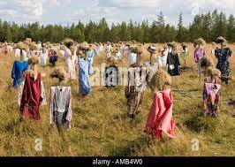
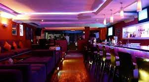

Document
GAMERS CLUB
Floating farms
The UN predicts there will be two billion more people in the world by 2050, creating a demand for 70 per cent more food. By that time, 80 per cent of us will be living in cities, and most food we eat in urban areas is brought in. So farms moored on the sea or inland lakes close to cities would certainly reduce food miles.
But how would they work? A design by architect Javier Ponce of Forward Thinking Architecture shows a 24m-tall, three-tiered structure with solar panels on top to provide energy. The middle tier grows a variety of veg over an area of 51,000m2, using not soil but nutrients in liquid. These nutrients and plant matter would drop into the bottom layer to feed fish, which are farmed in an enclosed space.
A single Smart Floating Farm measuring 350 x 200m would produce an estimated 8.1 tonnes of vegetables and 1.7 tonnes of fish a year. The units are designed to bolt together, which is handy since we’ll need a lot of them: Dubai, for instance, imports 11,000 tonnes of fruit and veg every day.
The UN predicts there will be two billion more people in the world by 2050, creating a demand for 70 per cent more food. By that time, 80 per cent of us will be living in cities, and most food we eat in urban areas is brought in. So farms moored on the sea or inland lakes close to cities would certainly reduce food miles.
But how would they work? A design by architect Javier Ponce of Forward Thinking Architecture shows a 24m-tall, three-tiered structure with solar panels on top to provide energy. The middle tier grows a variety of veg over an area of 51,000m2, using not soil but nutrients in liquid. These nutrients and plant matter would drop into the bottom layer to feed fish, which are farmed in an enclosed space.
A single Smart Floating Farm measuring 350 x 200m would produce an estimated 8.1 tonnes of vegetables and 1.7 tonnes of fish a year. The units are designed to bolt together, which is handy since we’ll need a lot of them: Dubai, for instance, imports 11,000 tonnes of fruit and veg every day.

